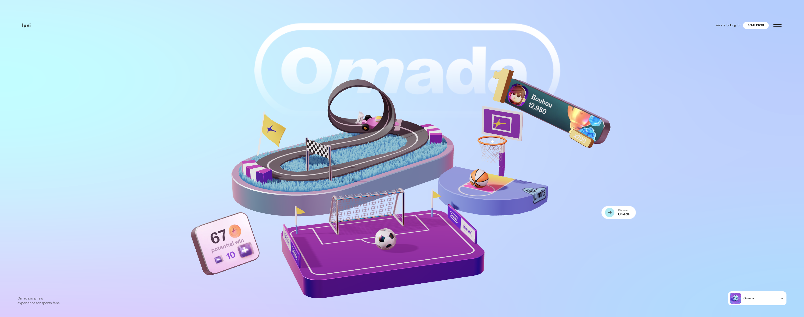
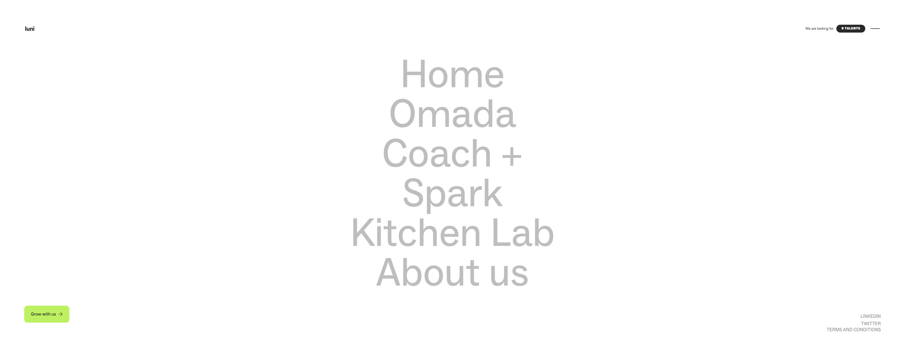

Khanh Toan Nguyen (Tony)
s3999152
RMIT University
Interactive Media 1 (OART1013)
Semester 1 March 2024
What was the first thing you paid attention to when interacting with the experience?

The first things come straight to my eyes the 4 floating 3d sections in term of objects and another one as a background behind. The project's name is obviously behind the objects but readable and easy to perform to the user at the first glance. The pastel color palette also puts a stress on the concept of the project while it creates an environment of a playground with games, sports and trees around. The whole picture fully express the developer team vibes of a dynamic, friendly and colorful environment. Additionally, the menu section can be accessed in 3 manners by the 3D objects, a bar at the right bottom and another on the right top. This design approach provides the users different paths of function, which avoid monotonous layout
Spend two minutes with the experience and create a list of each of your discrete actions.
- Focus on the objects stand for the menu: all the 3d objects can interact when I move the mouse curser to them (moving up down, …)
- Start moving and scrolling the mouse: (the floating items move backwards to the movement of the curser in the way they are floating) (scroll to change between the pages)
-
Explore the menu (each page contains some small games that user can use the curser to control)
 OMADA (the page with 2 games soccer and basketball illustrates the omada app which is a game-based app for sport betting without money)
SPARK (some phones, speaker shoes stand for the life styling app providing a 3d virtual coach)
OMADA (the page with 2 games soccer and basketball illustrates the omada app which is a game-based app for sport betting without money)
SPARK (some phones, speaker shoes stand for the life styling app providing a 3d virtual coach) KITCHEN LAB (a reduced living room on the page and the content is an endless scrolling page with collections of elements and graphics like a gallery)
KITCHEN LAB (a reduced living room on the page and the content is an endless scrolling page with collections of elements and graphics like a gallery) COACH+ (the page consists of a boxing ring and yoga place, which refers to the “Coach App” to follow and assist the user in doing fitness)
COACH+ (the page consists of a boxing ring and yoga place, which refers to the “Coach App” to follow and assist the user in doing fitness)
- About Us (the introduction of the company in which people create apps products and brands)
- Find out “the 9 talents” (the employing page to the developer of the company) View the social media link (linkedin and twitter)
What part of the experience did you spend the most time engaging with?
I spent the most time on the mini games on the Omada page playing emulated soccer and basketball game. The games are simple and easy to play but the interactions are smooth and the figures are cartoonated, which really appeals to me. The most satisfying part is when I score a point, there will be an emission of coins which stimulate the users with the feeling of winning. Besides, the games contain competitive elements which are the point records of players, so that users are eager to break the record and spend more time in the website. Accordingly, the developer solution for keeping the users stay in the website is possibly considered successful humbly due to my slight addiction to the mini game
What was the most common action in your two minute interaction with the experience?
It is evident that one of the most repeated actions of computer users is moving the mouse curser around. Apart from clicking and choosing, this action is also perfomed when people start thinking or relieving stress as a part of their habit. So, most of the time interacting with the website, moving the mouse curser around is one of the most frequent actions I have as all the 3D objects are programmed to react back in the way of moving backwards to the curser. This effect is obviously pre-calculated since the action of moving the curser is the most common action when people use the computer. The developer team has cleverly turn a boring action into a interactive and playful one
What is your impression of the intended primary goal of the interactive experience?
I am deeply impressed by the combination of the applications concepts and the interactive figures. The 3D models are created to demonstrate the content and meaning of each page and interact directly with the user actions. Therefore, it is visible that the pimary goal of the project is to introduce the company's projects on apps in which lifestyle and sports are the themes. By this, the developer attach each sort of 3D elements on each page before the introduction of the app for a preview. On the other hands, the delivery of the project also aims to approach the teenagers or youngster owing to the youthful and dynamic colors and concept while having a healthy lifestyle is alert and prior to be cope with among the young in the modern age.
How does the interactive experience communicate this primary goal?
In order not to foolow the old path of getting the customers informed with the application information at the beginning with illustrative elements attached on a side, there are four seperated home pages for each of the app where people can experience the interactive 3D models that is not only a distinguish preview for the app but also a way to cheer up the users mood before reading a long paragraph of text for getting to khow and undersatnd their project. To be specific, before getting in exploring the app, user can play around with the mouse curser by clicking the objects and see the reactions. This helps the users to have the initial figuration of the app without reading any introduction and they can enjoy some sort of entertainment as well


What is your impression of how the experience should be interacted with over time? (For how long and how many different times)
The most impressive part of the project is the interactive effect when moving the curser around. As i mentioned before, moving the curser is indeed my most common action i have during the time using the computer. Things start to be interesting when there is an effect programmed to this action, which made my experience more stimulating than ever even to the smallest part. I was absorbed in playing around with that for half an hour and see the differences between pages. For instance, the objects will spread out and then move slightly when the curser move towards. In addition, the menu bars will lean towards the curser on any sides. These can be regarded as simple and small details but straight-forwardly focus on every action including the most common ones of the users leading to an environments of interactive things without a single dead space
How does the interactive experience communicate how it should be interacted with over time?
It is a certain that the developer has brought a full view of a system of applications where the active life style is the theme and the team wants to convey this message to the youngsters. All the functions and sections in the website require users to have many actions and interact with it. This can be implied that the developer has introduce to the applicants the vibe and characteristics that needed to be a member of the company according to the "9 talents". The team tended to create 3D objects with slow but smooth movements, which raises users’ curiosity and spent their time playing around first before getting into the information, which is not a quick approach and the users have to achieve an overview by playing around first. However, the transition between the pages may be frustrating to a number of people but it, in some ways, lengthen the amount of time users experience the website
What other media forms (digital or otherwise) does the experience reference?
Beside the 2 lifestyle and fitness app (Spark and Coach+) there is also another game app for sport betting but generally legal without using real money, where users can interact and compete with each other. The idea came up based on the initial goal that the company want to achieve that the healthy lifestyle is important among the young generation. While using Coach+ and Spark can contribute to a doing exercise habit to improve physical health, Omada The new form of media contributes to the diversity of the company developments in applications which promote their activities and vary the range of the customers, which in this case are the sportaholic
| What does this reference/s communicate to you about how you should act when engaging with your research experience? | What does this reference/s communicate to you about how you should feel when engaging with your research experience? | The reference helps me to prepare for research by investigate the market where the trends can be the target. In this situation, sport betting is always known as one of the most popular means of entertainment in many nations. Nevertheless, this form of gambling is strictly banned in some countries for various reasons. From this using electronic coins or money inside the game is a sensible solution for this game to reach many markets | The reference helps me to understand the psychology of users while betting can stimulate their winning feeling. In this case, there won’t be any financial risk so people are willing to have a big bet. This refer to a vital step in doing research which is showing sympathy to the users as everyone has their fear of big loss. The solution is to make the bad things turn good by using electronic coins in the game for betting, which ease the players’ mind when they lose as eventually, “it is just a game” |
|---|
| What is the most frustrating part of the interaction to you and what makes that part frustrating? | What is the most satisfying part of the interaction to you and what makes that part satisfying? | One of the most annoying parts is the dead time when user switch the page by scrolling the curser. It takes about 3-4 seconds not too much but enough to make people frustrated when they want to explore more. Furthermore, I can see an overuse of icons in the descriptions of the recruiting section that the website will look less professional and serious in employing process | What comes most appealing is the movements of the 3D objects, slight floating when the mouse curser moves to. It creates the feeling of relieving and even interactive when the users doing nothing. People can constantly see some of the moving things in any page even when they apply no actions on the computer such as text scrolling, car racing and tree moving |
|---|